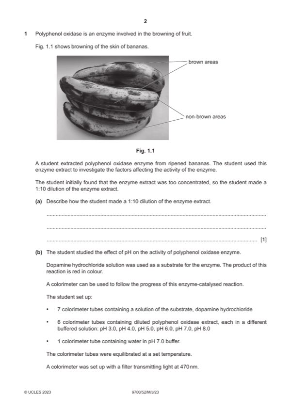

Question 1

Original paper page 2
Part 1(a) — solution
1 part enzyme extract/polyphenol oxidase with 9 parts of water / buffer ; 1
Mark points
- Include the ideas shown in the solution above.
Part 1(b)(i) — solution
pH ; 1
Mark points
- Include the ideas shown in the solution above.
Part 1(b)(ii) — solution
any one from: 1
Mark points
- Include the ideas shown in the solution above.
Part 1(c)(i) — solution
1 figures from printed line at or below 0.26 au and 30 s 2
or
figures from correct tangent ;
Mark points
- Include the ideas shown in the solution above.
Part 1(c)(ii) — solution
sketched line below printed line starting at origin and constantly increasing to 180 s ; 1
2023 Page 8 of 13
9700/52 Cambridge International AS & A Level – Mark Scheme May/June 2023
Mark points
- Include the ideas shown in the solution above.
Part 1(d) — solution
1 state at least 5 dilutions (0.0–0.2%) of dopamine hydrochloride solution / substrate ; 7
Mark points
- Include the ideas shown in the solution above.
Part 1(d) — solution
11 named hazard and risk and precaution ;
Hazard Risk Precaution
dopamine Toxic don’t drink
hydrochloride don’t pour down the sink
wear gloves
Irritant / allergy wear gloves /
goggles / mask/ PPE
polyphenol Irritant / allergy
oxidase / enzyme
buffer Irritant / allergy
Mark points
- Include the ideas shown in the solution above.
Part 1(e) — solution
1 enzyme: from different (plant) sources / only from plants / enzyme not used from bananas ; 2
Mark points
- Include the ideas shown in the solution above.
Part 1(f) — solution
sketched line (starts at origin) levels out showing lower Vmax ; 1P
Mark points
- Include the ideas shown in the solution above.